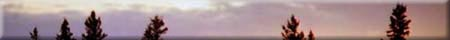
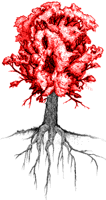
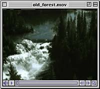
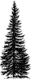
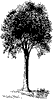
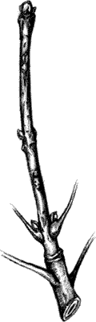

|
  The shape of a tree depends on many factors, such as the amount of space it has to grow in, the amount of sunshine and moisture it receives, the relative growth rate of its terminal and lateral branches, and any damage it receives from such factors as lightning, fires, prevailing winds, snow, animals, and disease. The part of the tree above the trunk, called the crown, is built up bit by bit and year by year in order to maximize the leaves' exposure to the sun's energy. The direction of growth of the branches is towards the light. Trees that can reach above their neighbours get the most sunshine and are said to have dominant crowns. Those that are shaded by other trees may be slower growing and are called suppressed trees. In some species, such as poplar, continued shading over several years will eventually lead to their death. Other species, however, called shade tolerant, can survive long periods in low levels of light. Species such as white spruce establish themselves under a canopy and eventually become dominant as pioneer species die off.
|
 While a great height and large crown give a tree more exposure to sunlight, they make the branches more vulnerable to damage from severe winds or heavy snow. To balance the spread of its branches, a tree tends to grow deeper roots to anchor it firmly against toppling by storms. The jack pines have large deep tap roots which enable them to root themselves well in shallow sandy soils and access water. Spruce trees have a shallow root network which leaves the trees susceptible to wind blow when the tree is exposed. Such exposure may come from removal of adjacent trees during logging operations or when a road is being built or, naturally when a fire leaves a strip of trees along a lake as it goes through an area.
|
|  Conical - In conical forms - such as the familiar spruce tree - the terminal bud grows much faster than the lateral branches. The resulting conical form helps the tree shed snow and ice, and its compact shape resists wind pressure. For this reason, the conical form is most common in trees growing farther north. |  Round - In the milder climatic areas associated with mixed wood forest and southern parkland, the predominant form is that of the spreading, more rounded crown, typical of aspens and elms. |
|
If you look at a branch on a deciduous tree during the winter when the leaves are gone, you can see terminal buds at the very ends of the twigs. These are the points from which the next spring's growth will take place. Buds are protected from freezing by a covering of moisture-conserving bud scales. Twigs also have side or lateral buds, from which side branches develop. Buds are formed in the summer and fall and remain dormant over winter. Dormancy is broken when suitable growing conditions return, usually in the spring. If you look further back along a twig, you will come to a ring of thickened bark. This scar tissue marks the place where the terminal bud grew the previous year and is called the terminal bud scar. The distance between the scar and the new terminal bud is therefore the amount of growth that took place in one year. Knowing this, you can find the age of several branches of different sizes on a tree.
Buds are actually areas of growth; where the stem or branch lengthens or leaves develop. In vascular plants, most cells that have differentiated - into phloem or xylem for example - lose their ability to divide. Each cell of either xylem or phloem tissue is formed undifferentiated tissue that continues to divide by mitosis as long as the plant lives. This tissue, where ever it might be located in the plant, is referred to as meristem. Meristematic tissue can be found at the tip of a stem. As a stem lengthens, the majority of the meristematic tissue remains at the tip and some remains behind. Branches and leaves develop from this remaining tissue. A bud actually forms before the end of the growth season and contains the differentiated cells (xylem, phloem, mesophyll and so on) of a leaf. These cells are quite small and in the new season, the leaves expand mostly from the enlargement of these small cells. |
 |